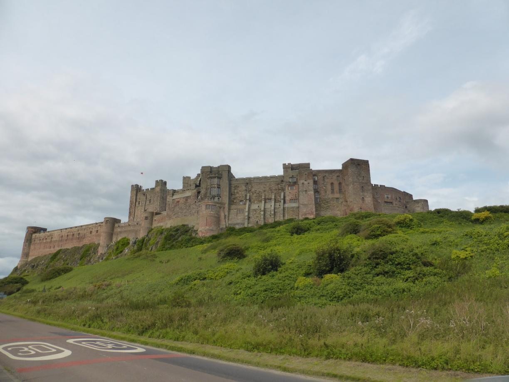

Northumbria Posted on August 20, 2017
Tag 20
Trimdon - Cresswell 94 km
Am nächsten Morgen fühlte ich mich wieder top fit und packte gut gelaunt meinen Kram zusammen, Als ich gerade bereit war weiter zu fahren, fing es plötzlich an zu regnen. Nach 5 Minuten hatte es jedoch schon fast wieder aufgehört. Ich fuhr trotzdem sicherheitshalber in Regenklamotten los, nur um diese nach 5 km wieder auszuziehen. Natürlich gab es kurz darauf wieder einen kurzen Schauer. Ansonsten blieb es aber trocken.  Kurz vor der Fähre bei Newcastle traff ich auf Jerry, einen rüstigen Rentner aus Oregon. Mit seinem Hollandrad wollte er ebenfalls nach Schottland. Sein Plan war es jedoch, dem River Thyne zu folgen. Da ich weiter entlang der Küste wollte fuhr ich alleine weiter zur Fähre. Beim warten auf die Fähre traff ich Jerry dann wieder. Er hatte zwischenzeitlich in Erfahrung gebracht, dass der Radweg entlang des Flusses auf dessen Nordseite verläuft. So tauschten wir auf der Überfahrt noch Geschichten von unseren Reisen aus.
Kurz vor der Fähre bei Newcastle traff ich auf Jerry, einen rüstigen Rentner aus Oregon. Mit seinem Hollandrad wollte er ebenfalls nach Schottland. Sein Plan war es jedoch, dem River Thyne zu folgen. Da ich weiter entlang der Küste wollte fuhr ich alleine weiter zur Fähre. Beim warten auf die Fähre traff ich Jerry dann wieder. Er hatte zwischenzeitlich in Erfahrung gebracht, dass der Radweg entlang des Flusses auf dessen Nordseite verläuft. So tauschten wir auf der Überfahrt noch Geschichten von unseren Reisen aus.
Kurz nachdem ich mich von Jerry getrennt hatte, traf ich auf Ellen und Lizzy. Die beiden waren in die selbe Richtung unterwegs, sodass wir von nun an zu dritt gegen den Wind kämpften. Da die beiden vorab einen Campingplatz gebucht hatten, hatten sie es ein wenig eilig. Wir kamen gut vorran und es war eine willkommene Abwechslung mal wieder in Gesellschaft zu radeln. Gegen 7 kamen wir an einem sehr netten Zeltplatz direkt in den Dünen vorbei. Ich hatte keine Lust mehr noch weiter zu fahren und entschied dort zu bleiben. Da die beiden aber den bereits gebuchten Campingplatz erreichen wollten trennten sich unsere Wege wieder.
Auf dem Zeltplatz war es sehr windig, aber dafür hatte ich einen wunderschönen Blick aus dem Zelt direkt auf den Strand.
Tag 21
Cresswell - Fenwick 82 km
 Der Wind hatte in der Nacht zum Glück nachgelassen. Nachdem ich meine Sachen gepackt hatte, plauderte ich noch ein wenig mit meinem dänischen Zeltnachbarn und probierte von seinem selbstgebackenen Brot.
Der Wind hatte in der Nacht zum Glück nachgelassen. Nachdem ich meine Sachen gepackt hatte, plauderte ich noch ein wenig mit meinem dänischen Zeltnachbarn und probierte von seinem selbstgebackenen Brot.
Entlang der Küste in Northumberland kam ich an einer Vielzahl Burgen vorbei.  Am Nachmittag kam ich zu einem netten kleinen Campingplatz auf einem Bauernhof. Am Abend saßen wir dann noch mit fast allen Campern in einer netten Runde beisammen.